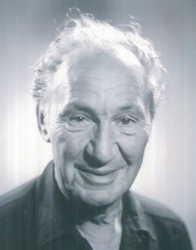

a.k.a. lakabı: Fisherman of HalicarnassusHalikarnas Balıkçısı
Turkish writer, born in 1890 in Crete, died in 1973 in İzmir.
Roman ve hikaye yazarı, doğum: 1890 Girit, ölüm: 1973 İzmir.
Under pen-name Halikarnas Balıkçısı he's written novels, short stories, essays and children's books. He's known for his love and passion for the Aegean Sea, and Bodrum in particular.
Halikarnas Balıkçısı adıyla roman, hikaye, makale ve çocuk kitapları yazmıştır. Ege'ye ve özellikle Bodrum'a olan tutkusuyla bilinir.
He also appeared in a brief role for movie Yüzbaşı Tahsin (1950)
Yüzbaşı Tahsin (1950) filminde kısa bir rolü de olmuştur.
You can visit Wikipedia for more information.
Wikipedia sayfası için tıklayın.